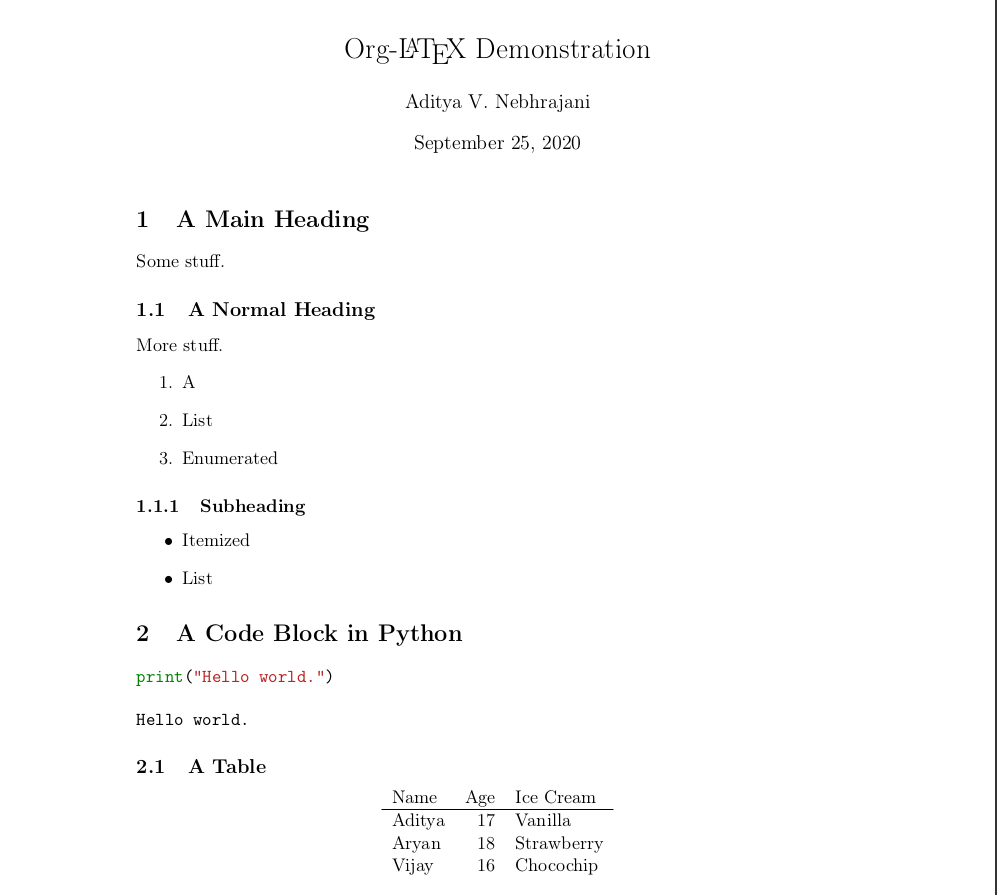

How Things Are Done
Most people today, to their everlasting loss, use apps designed in web frameworks like Electron and React, complete with a laggy GUI and paying tremendous overhead for simple tasks (think Microsoft Teams, Word, Discord, and VSCode). The fact that your computer is slow and laggy isn't your fault: it's the fault of the applications you run on it. Although computers grow more powerful every year, this power is quickly gobbled by the ever-growing applications being run on them. These applications not only grow in resource requirement, but also in prettiness and aesthetic appeal.
This is something strange that's come about recently. Developers and users traditionally haven't needed more than a glass teletype to do nearly everything. The love for pretty interfaces seems to be something that came from smartphones to desktops rather than vice versa, and, indeed, many desktop versions of apps resemble mobile versions. While this eye-candy is undeniably fun to stare at, it doesn't really get the job done.
Now, I'm not one of those people who want the world to stop using GUIs and for everybody to go back to TTYs. Having a GUI is a good thing, and the desktop metaphor is undeniably useful. However, programs like the ones people are increasingly shifting to have a few major problems.
- Less powerful tools, but more resource intensive. The
apps created have the usual painful limitations of a GUI
application: the end user can only modify what the
programmer thinks the user should modify, nothing more.
This means these programs are de facto less flexible.
Furthermore, they take way more resources to do simple tasks
because of being written in such high level languages. It can be
argued that this is a privilege that comes with Moore's law and
ever-increasing computer horsepower. However, in my humble opinion,
we aim to use increased computing resources for doing more
complicated tasks, not the same tasks in a more complicated way.
For instance, a simple sort in a CSV file using 'modern' tools
requires me to launch Excel or Numbers or LibreOffice, locate the
column, then locate the sort function in an obscure menu that varies
from program to program. How would this be done in the traditional
way?
sortwith some offset argument. It's important to understand that the basic tasks one needs to do with a computer haven't really changed: data processing, text editing, navigating the file system, and so on. It's just how we do it that's so different. Now, the cost of havingsorthidden behind some strange interface is still acceptable if this somehow makes it easier for the end user or uses less resources. Maybe. But, of course, it doesn't. Instead, it only complicates the workflow, and uses more system resources. It's a lose-lose. - Mouse based interfaces. This is highly subjective, but it's something that people realise with time. Unless one is using a touchscreen, the right way to interact with a computer is a keyboard. However, in recent times, application developers want to have a similar interface for both mobile and desktop applications. This naturally means using a mouse pointer for the desktop version, and this is, in my opinion, a terrible idea. Mice are slow, require one to be following the pointer around with the eyes, and generally require screen real estate to be sacrificed to menus and big buttons. Increase the font size by 4pt and you've created your own personal hell. Computers are meant to be used with a keyboard. It's the most natural way for us to communicate other than speaking: typing out exactly what we want done. It's infinitely better, cleaner, and more customisable than any GUI. Some developers do recognize this, and add a way to navigate parts of interfaces using only keyboards (Discord and its C-k). These are, however, a minority. Most remain bound to clicky interfaces which slow people down. Keyboards are faster, more intuitive, and easier to use.
- Lazier development. The people writing these gargantuan programs use huge web frameworks to write these programs, which themselves are pretty annoying to write in, but equally annoying not to write in. It's the best way to satisfy the end-user's GUI fetish. However, it creates a class of programmer who is incapable of writing truly good code, and merely calls library functions to do the hard work. I can't cite studies about this, but it's happening out there in the real world. Hopefully such systems will collapse onto themselves: the people who use high level languages and frameworks as crutches will eventually have nobody to maintain the low level code of the frameworks, and the system will implode. Hopefully.
Okay, so maybe you're convinced. GUI heavy programs are terrible. Why then have such programs flourished, while their CLI counterparts have been left to die in dark corners along with bearded Linux and BSD users making a big fuss about the old days?
Two words: learning curve. Users are lazy. This is a fundamental principle in computer design. The less time people spend learning to use your tool, the more time people will spend using your tool...or so the common wisdom goes. Such a conclusion is perfectly valid from a short term standpoint: however, in the long term, it means your user will shift away as soon as a sexier, slightly faster, more ubiquitous, or with-the-one-feature-you-thought-you-could-put-in-the-next-release program comes along. By not having an interface to every single thing the computer is capable of doing, you compete with other developers on who can port these features into a GUI most effectively. (By the way, the name for an interface to all functions of a computer is called a programming language.)
Why is this Happening?
Developers aren't evil by nature, they don't want to limit what you can do. They give people what they want, what is easy to use, and what gets popular. The only reason inferior programs like the ones we discussed even are used, or are bought is because the common user does not have the willingness to learn something with a steeper learning curve. The pathetic programs people use limit them from using their computers fully.
If you're here and reading this, you're probably unsatisfied with your workflow and the way you use technology. If not, come back when you realise you are, this page is going nowhere. Learn how to use your computer to its full extent. Whether you're an artist or a CS major, it will come in useful. The first step to that, is climbing the learning curve of at least one tool unlike the rest.
A Case Study: Text Editors
In the context of what we've talked about, I'm going to talk about text editors first. Nearly everything one wants to do on a computer can be done in a text editor, if the editor is good enough. The graph below shows the results of StackOverflow's annual developer survey: since 2015, they've asked about which editor is used. Note the period between 2015-2016 isn't a great data point since 2016 onward responders could choose more than one option.

This graph is tremendously interesting. In the past few years, we've seen text editors come and go, almost like a fashion: TextMate, Sublime Text, Atom, and now, VSCode. People are shifting away from Atom and Sublime Text to VSCode, and simultaneously I'm sure, many people who are beginning to code are starting with VSCode.
However, there's something subtle and more interesting about this graph: it's that two of the editors up there: Emacs and Vim, seem to be completely unaffected by the rise of VSCode. This is because these are two of the oldest software programs in existence, and because they have probably the most dedicated user base among all editors.
The right question to ask at this point, is: why are these two programs not losing the editor war to VSCode? VSCode has everything going for it: it's used by more than 50% of the respondents, it has an excellent extension store, it can be used as a web app, and of course, it's open source and managed by Microsoft. It seems set to have a longer life than short-term editors like Atom and Sublime Text had, and yet, two groups of people are not making the shift. Let's dive in.
Introduction
One of the most important tasks people do on a computer is typing.
Specifically, editing files. Historically, a simple program called an
editor is used to edit text files. Starting with the minimalist ed,
these editors have gotten more and more complicated, and have branched
into various types of programs, such as IDEs, word processors,
spreadsheet tools, and so on. People seem to have moved past ever
wanting or needing a 'primitive' editor. However, the strange part is,
there's one program which started as an editor, but can somehow has
the superset of nearly all functionality offered by the various
programs people use.
GNU Emacs is probably one of the oldest software programs in
existence, along with vi. It's also a fantastic piece of
software: evidenced by how long it's survived. At its core, it's an
editor, meant simply for the purpose of editing text files. What makes
it so vastly different from Notepad or even Microsoft Word is the fact
that it's, well, not actually an editor.
GNU Emacs
Emacs, being such an old piece of software (1976), has obviously had its fair share of schisms and branches. The only remaining stable branch, however, is GNU Emacs, whose latest version as of September 2020 is GNU Emacs 27.1.
Now, part of what makes Emacs such a great piece of software is the fact that it's actually a REPL (read, eval, print loop) in a modified version of LISP called eLISP. This means the program itself, minus a small C core, it's written in a single language. How does that help? It means Emacs is infinitely malleable: the user can change everything, or nothing, depending on what they want to do. This also means there's rarely a feature Emacs doesn't have or can't have by writing some quick code, since eLISP is pretty intuitive and an easy language to write in. The favorite features of other editors: from Sublime's multiple cursors, Atom's themes, vi's editing modes, to even having an interface for Git, Email, IRC, and Twitter, Emacs can be moulded to do, well, anything. This is primarily because of eLISP itself and a large community of people who write packages to keep Emacs at the bleeding edge.
Jack of All, Master of None
Many arguments against Emacs involve this very versatility, people claim it is an operating system rather than an editor. With this, I agree, however, it isn't necessarily a bad thing. We'll talk about what makes Emacs' interface so unique in a minute, but before that, let's admit that Emacs isn't a great OS, because it doesn't have threading. (People are working to fix this too, but it might be a while. Meanwhile, I'd recommend sticking to your favourite distro.) Emacs being an OS is one of the things is what keeps people tinkering with 1000-line configuration files. It provides a uniform interface for a variety of tools, and overall means less context switching for the end user. In addition, it means that nearly everything one wants to do can be changed in a couple of lines of eLISP since Emacs is self-documenting, something we'll talk about later. Emacs being a jack of all trades is its biggest advantage. Hopefully you'll see by the end of this article that it's a master of all too.
Before we proceed, it's interesting to note that Emacs (and Vim) have survived so long for a set of reasons pretty similar to those we cited for VSCode: extensibility, portability (terminals to GUI), and a body maintaining it (GNU). They're just not popular...any more. They were too, back in the day. The question then is, why use something VSCode might transcend? For the answer, read on.
What Does it Take To Write Well, Anyway?
To write a good Word document, or good code, or to type anything of value, you need (maybe) five features. Those are:
- Easy movement around the file.
- Tight OS integration: clipboards and the like.
- Syntax/spell checker.
- Extensibility.
- Eye candy and good looks.
Anything else is an add-on, that's purely unnecessary to the logical mind. Sorry Microsoft, your WordArt is irrelevant, and kind of ugly too. Obviously, there are other things which are good to have, like auto-completion, a file browser, and so on.
Similarly, the needs of a developer, specifically, are also limited: a
debugger, a way to process data, version control, build automation,
and so on. Things like variable and class browsers are useful, but not
vital. The thing is, even developers in the 1980s needed the same
tools, and they developed without these gargantuan, slow beasts that
are IDEs. Their development environment was their operating system.
Check
out Unix
as An IDE for more on the topic. The essence is that a *nix
system has practically everything you need to develop good code. The
tools available in a humble terminal can easily outperform the latest,
most flashy IDE in terms of development tools. This is quite simply
because it's been around longer, and because developer needs haven't
really changed since the '70s anyway. The only argument against this
is that IDEs do it in a prettier way, and one that has a less steep
learning curve. Since we're climbing the curve here, there's no reason
for us to desire an IDE. We then embark on the search for a really,
really good editor that first does the main job well (Unix philosophy:
do one thing, and do it well), pure text editing. The obvious answer
to that question is vi. However, this editor must be
easily extensible using a language, and Vimscript really, really
sucks. We then want a sort of extensible Vim, one that's ideally as
old and as proven. The obvious answer: Emacs.
If You Can't Beat 'Em, Join 'Em
This is the core philosophy of Emacs, which has kept it alive for so long. The core of Emacs is wholly unremarkable save for its extensibility. Because of its extensibility, we can use Emacs to mimic any editor we want. Let's first look at the features Emacs uniquely has, then at the features it's stolen from other editors over the years. This is by no means a comprehensive list, it's just a list of the ones I think are important. Feel free to mentally add your own.
Core Emacs
EMACS stands for Extensible MACroS, basically meaning shortcuts in Microsoft parlance (such as Ctrl-Alt-Del). Nearly every major function in Emacs has a shortcut. Also, it's extensible, meaning you can change the shortcuts or add your own. Emacs has its own set of standard shortcuts, such as C-a for start of line, M-x for execute extended command, and so on. (C- is control, M- is meta or Alt). Some of these are so popular they work system-wide on Apple's macOS and some terminals.
Now, this focus on macros emphasises the keyboard-centric design of Emacs. Everything can be done with your keyboard, and you'll never need a mouse. This is admittedly not through the genius of the developers, but because Emacs was originally a terminal program and not a GUI-based one. Mouse support was, in fact, added later. Emacs did one thing slightly different from other programs at the time, instead of leaning heavily on the terminal (like vi) for operations, it instead created its own type of unique interface, which is the reason, in my opinion, Emacs is the ideal editor.
A Case Study: Dired
Opening files and navigating directories is something most editors today are able to do using an 'open' command. However, surfing the file system is something left to the system, even by modern editors which call on the OS' file system manager. Not so for Emacs: it has a tool called Dired, which is the most intuitive way to navigate the file system, and in its creation, created a new kind of interface most people aren't aware of.
The command used to generally view files in a directory
is ls. Its output (with the -al options) looks like this:
$ ls -al total 92 drwxr-xr-x 2 aditya eng 4096 Sep 25 11:59 . drwxr-xr-x 6 aditya eng 4096 Sep 8 14:09 .. -rw-r--r-- 1 aditya eng 2183 Aug 23 17:09 css.css -rw-r--r-- 1 aditya eng 11320 Aug 23 17:10 hack.css -rw-r--r-- 1 aditya eng 8132 Aug 23 17:14 index.css -rw-r--r-- 1 aditya eng 54436 Sep 25 11:36 latexmathml.js -rw-r--r-- 1 aditya eng 831 Aug 23 17:09 standard.css
We won't go too deep into what this output means, it is sufficient to
note that it tells us everything useful about the files in one tiny
interface. To navigate the file system further, we can cd
into directories and view files with cat. This is the
epiphany moment for Emacs' interface: Dired in Emacs looks like this:

This is exactly identical to the terminal output, except that it can
be navigated without typing tedious commands like cd.
Files can be marked for movement and copying, renamed, deleted, and
the whole filesystem can be navigated just by hitting the RET key on
directories to go in, and the RET key on files to open them. To
realise how brilliant such an interface is, consider the fact that
when you're navigating in the terminal, you're basically going into
and out of directories using cd anyway. Emacs correctly
makes an 'interface' for this process by letting one navigate the
terminal by typing single keyboard characters on a terminal-like
output.
Such interface is Emacs' strongest plus point. It combines the simplicity of a point and click interface with the detail and flexibility of the terminal and keyboard system.
vi
While hard for me to admit, vi's paradigm of modal editing is far superior to Emacs' text editing capabilities. Modal editing there are two main modes: 'normal' mode and insert mode. Only in insert mode can you insert characters into the file. In normal mode, the keys all have various different functions. This is tremendously helpful for things like deleting words, moving around, and selecting text.
For instance, typing 'd3w' in normal mode deletes three words. 'v3w' selects a region of the next three words, and so on. To enter text, press 'i' to go into insert mode. Enter the text, then hit ESC to go back into normal mode.
Such an editing system is again brilliant, because it works the way the human mind does: modally. Right now, I'm entering text. Sometimes, I'm selecting text, at other times, I'm deleting. It is elegant to reduce text insertion to a mode rather than try to do all other functions by using modifier keys. It's easier on the pinkies too: key notes rather than key chords. Obviously, such a system wasn't designed only because the designers were brilliant, but because vi is so old that the modifier keys on keyboards were not yet standardised, and vi had to work on every possible workstation. You couldn't get stuck just because some workstation didn't have a Super key you'd bound to an all-important function. Which keys will always be there on a keyboard? The 26 alphabets, the numbers, and some punctuation marks. vi, hence, only uses those keys.
Emacs, through eLISP, can easily mimic vi's modal behaviour. There are
many packages written to do this, but the best is
easily evil-mode (Extensible VI Layer), a play on the
running joke about vi being the editor of the devil. evil
is a delightful package, and emulates vi flawlessly, far better than
the equivalent packages available for VSCode and Atom: because it lets
you hook into the greater Emacs interface. More on that later.
TextMate
Arguably the father of 'modern' text editing, it introduced the world to abbreviation based snippets, automatic pairing of characters, fuzzy finding of files, and, most importantly, extensions available in a centralised source. Sadly, TextMate had internal issues which prevented it from lasting long.
The value of snippets is well known, for instance,
typing main and getting the entire snippet:
int main(int argc, char *argv[]) { return 0; }
Emacs emulated this ability in no time at all, in a way which was stable and useful. Emacs has especially good support for fuzzy-finding, using frameworks such as Helm, Ivy, and Ido, and an excellent system for installing packages using package archives such as ELPA and MELPA.
Sublime Text, Atom, and VSCode
These two editors brought multiple-cursors, minimaps and cool themes, which the Emacs community easily emulated as well. Microsoft brought their Language Server Protocol, which Emacs also has packages for.
Emacs can hence easily emulate the useful feature of any other editor, as well or better than the original editor. This capacity for taking ideas and improving on them is what sets Emacs so far ahead: anything anybody comes up with can be incorporated into a superset of all features.
Okay, So Show Me What Emacs Can Do
Emacs can do literally anything, but the following is a list of my favourite features. This isn't a complete list, and future posts will most certainly add to it. Hopefully, it'll convince you to start using Emacs as well. A lot of these features are what make Emacs a replacement for many of the applications people use.
Org As A Markup Language
Org is a markup language which is insanely flexible and powerful. We'll go into more detail in future posts, but one thing I do want to highlight here is the LaTeX export. LaTeX is an amazingly powerful way of creating beautiful PDFs, designed by Knuth himself. It's not too easy to write in for the lazy though, it's quite verbose and long. Org's export to LaTeX based PDFs is a very clean way to generate documents, which lets us convert markup looking like this:
#+title: Org-LaTeX Demonstration
#+options: toc:nil
* A Main Heading
Some stuff.
** A Normal Heading
More stuff.
1. A
2. List
3. Enumerated
*** Subheading
- Itemized
- List
* A Code Block in Python
#+BEGIN_SRC python :results output :exports both
print("Hello world.")
#+END_SRC
** A Table
| Name | Age | Ice Cream |
|--------+-----+------------|
| Aditya | 17 | Vanilla |
| Aryan | 18 | Strawberry |
| Vijay | 16 | Chocochip |
To a LaTeX document looking like this:

It even evaluates and prints the output of the Python code below the
snippet. The table can do everything Excel can and more: it accepts
data processing arguments from languages like Lisp, Python, and R. In
one shot, org-mode replaces both Excel and Word. (It
replaces PowerPoint using Beamer too, but that's for another post.)
LaTeX is the standard for writing research papers
and other documents. Besides, it looks a lot better than word, and
with a little practice of learning how to type equations, it writes
them beautifully. The following LaTeX code:
f(x) = \int_{b}^{a} \frac{1}{3}x^3
e=mc^2
s=ut+\frac 12 at^2
\sum_{i=1}^{10} t_i
\int_0^\infty \mathrm{e}^{-x}\,\mathrm{d}x
The resulting output, rendered using a LaTeX to MathML converter to display in HTML is:
$f(x) = \displaystyle\int_{b}^{a} \displaystyle\frac{1}{3}x^3$
$e=mc^2$
$s=ut+\displaystyle\frac 12 at^2$
$\displaystyle\sum_{i=1}^{10} t_i$
$\displaystyle\int_0^\infty \mathrm{e}^{-x}\,\mathrm{d}x$
Since Org is a front end to LaTeX, it's easy to type equations into it. In addition, org-mode is used for literate programming, as all the source code blocks can be evaluated, and Org used for explaining the code. There's a lot more that can be done that we'll look at in other posts someday. To convince you of how flexible and powerful Org can be, here are some of the documents I've created using Org-LaTeX. I tend to use plain LaTeX more often due to force of habit, but in a pinch, like for taking notes or answer keys, this is the way to go.
Appendix
A quick note about the effectiveness of languages: a C++ program to find the number of distinct elements in an array looks like the following (I had to write one recently):
#include <bits/stdc++.h> using namespace std; int distinct_elements(int arr[], int n) { // Creates an empty hashset unordered_set<int> s; // Traverse the input array int res = 0; for (int i = 0; i < n; i++) { // If not present, then put it in // hashtable and increment result if it isn't zero. if (s.find(arr[i]) == s.end() && arr[i] != 0) { s.insert(arr[i]); res++; } } return res; } int main(void) { std::ios::sync_with_stdio(false); int T; cin >> T; int j; for (j = 0; j < T; j++) { int n; int i; cin >> n; int arr[n]; for (i = 0; i < n; ++i) { cin >> arr[i]; } cout << distinct_elements(arr, n) << "\n"; } return 0; }
The Python equivalent for the same code looks like this:
T = int(input()) i = 0 while i < T: n = int(input()) arr = list(map(int,input().strip().split()))[:n] print(len(set(arr))) i+=1
So yes, the motivation to write in Python is very much there. It's also easier to understand and maintain, and seems ideal...until you realise the Python code is an order of magnitude slower (on my system).